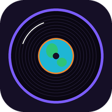

You’re offline
Earth Jukebox needs an internet connection to fetch NASA EONET events. The shelf will update when you’re back online.

Earth Jukebox needs an internet connection to fetch NASA EONET events. The shelf will update when you’re back online.